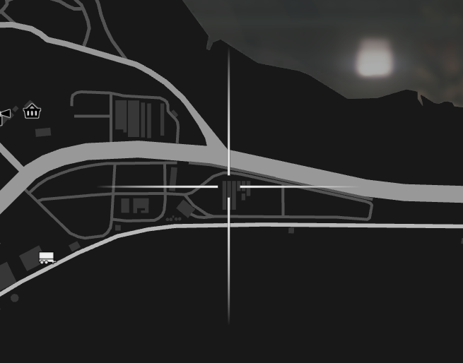

Making Kimchi is a fun and great way to make food and also enjoy it after.
Things you need:
Cabbage
Soy Sauce (Bought from any 24/7)
Head over towards Paleto Bay by the farms and start looking for cabbage.
Picture of the cabbage fields:

Once you have cabbage and sauce, you can just mix it together in your pockets.
Once you got your Kimchi, enjoy a full stomach! You can return to the main website with the button located at the top left. Or click here!